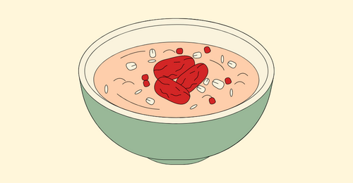

Talbina

Talbina is the prophetic dish for relief from sadness!
Talbina, also known as barley porridge, is the absolute best thing to eat when you're going through tough times.
Also, "Talbina" is a nutritious dish that can help reduce depression, relieve stress, and enhance mood.
Ingredients
- Barley flour
- Milk
- Honey
- Toppings: dates, black seeds, nuts, and fresh fruit (optional)
Recipe Instruction
- Add 2 heaped tablespoons of barley flour in a small saucepan.
- Add 1 cup of whole milk and mix until well-combined.
- Cook and stir for 3-5 minutes.
- Pour into a serving bowl and drizzle honey on top.
- If you're feeling fancy, go ahead and throw some chopped dates, nuts, or fresh fruit on top of your Talbina. It's totally optional, but it'll add a little extra pizzazz to your bowl.
RETURN TO HOME PAGE